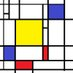

楽天証券第2报：168万个账户的资产余额外泄后续
4 条帖子，合计浏览 104 万次
之前的报道：11月23日晚间“楽天証券集体诉讼报名称破6万人，补偿规则受关注”
网络券商楽天証券（楽天集团旗下）24日公布客户信息外泄的第2次调查结果，确认约168万个账户的资产余额外泄，姓名、住址等个人信息约441万件，还新增了性别、国籍等7项外泄内容。日经报道这件事的帖子获得900多个赞，一条转贴新增项目的聚合帖获得2800多个赞。公司说至今没有确认非法交易。
- 此前
- 楽天証券17日公布测试环境里的客户数据可能被盗，金融厅已命令它提交报告，也有律师在招募集体诉讼的参加者。 TBS
- 涉及多少
- 含姓名、生日、住址、电话的个人信息约441万件，其中约119万件属于开户手续没办完的申请人。只外泄登录 ID 和客户编号的约1198万个账户，比第1次公布时设想的上限约1125万还多。 FNN、BigGo
- 资产信息
- 约168万个有余额的账户外泄了各类商品的余额，持有哪些股票基金和买卖记录都不在其中。客户开户时自己申报的年收入约1.4万件、资产约271万件，外泄的只是档位编号，没有具体金额。 TBS、mediadogs
- 新增项目
- 新确认外泄的7项是性别、国籍、传真号码、客户汇款用的公司收款账户、开户和解约状态、开户问卷回答和账户登记状态。 mediadogs、BigGo
- 风险
- 密码和交易密码没有外泄，至今没有确认非法交易。TBS 提醒，骗子可能在电话里准确报出姓名、住址和工作单位让人信以为真，甚至有引来抢劫的风险。 FNN、TBS
补充来源：楽天証券 顧客情報流出は441万件 これまでに不正取引なし 追加調査結果を公表｜、楽天証券の顧客情報漏えい、個人情報は約441万件 うち約119万件は口座を開いて、楽天証券 口座の資産残高漏えいは約168万件 顧客申告の年収や資産情報の計272
JR久留里线末段台风受灾后放弃修复，实质废线
1 条帖子，合计浏览 128 万次
千叶县房総半岛的 JR 久留里线，久留里站到上総亀山站约9.6公里的末段9月被台风25号冲坏，JR东日本已决定不再修复，这一段等于提前废线。NHK 千叶24日发的报道帖获得7400个赞、约128万次浏览。这段线路本来就因为乘客太少，定于2027年4月1日废止，现在到废止日都不会再有列车跑。
- 受灾情况
- 上総松丘站到上総亀山站之间有3处路基大面积塌方，崩落土方约5600立方米。JR东日本调查后估计，修复要在开工后花约半年。 乗りものニュース、鉄道コム
- 为何放弃
- JR东日本10月23日宣布放弃修复，理由是受灾规模大，而且这一段明年3月底就要废止。负责千叶地区的本部长在记者会上向乘客道歉。 TBS
- 客流
- 这一段2024年度平均每天的通过人数只有76人，一年亏损约2亿日元。 Yahoo新闻专家文章
- 怎么出行
- 到2027年3月31日为止，JR东日本用巴士和出租车代行这一段。木更津站到久留里站约22.6公里不在废止范围内，列车照常运行。 鉄道コム、トラベル Watch
- 废线以后
- 君津市的协议会资料显示，废线后除了现有的预约制巴士，还会开通代替铁路的社区巴士。 トラベル Watch
补充来源：一部区間で運休続くJR久留里線“復旧を断念”（TBS NEWS DIG）、再起動する内房線、あっさり力尽きる久留里線（トラベル Watch）、久留里線の末端区間、鉄道の復旧を断念 “廃止半年前”に台風25号で被災（鉄道コム
原帖 千葉のＮＨＫ
千葉のＮＨＫ
Anthropic跌破发行价，两位创始人各套现2.8亿美元后续
2 条帖子，合计浏览 33.9 万次
之前的报道：11月21日早间“美股连跌7天进入调整，Anthropic失去稳价支撑”
开发 Claude 的 AI 公司 Anthropic 美国时间24日盘中第一次跌破83美元的发行价，离上市还不到一周。前一天公开的美国证券交易委员会申报文件显示，CEO Dario Amodei 和总裁 Daniela Amodei（两人是兄妹）上市时各卖出约338万股，各得约2.8亿美元。X 账号 unusual_whales 称七位联合创始人都卖了同样数量、合计近20亿美元，帖子获得5000多个赞，媒体报道确认的是 Amodei 兄妹两人。
- 此前
- Anthropic 19日上市，首日收涨17%，之后跟着科技股一起下跌。 路透社
- 股价
- 24日早盘一度跌约13%到约76美元，比首日收盘价约97美元低了约22%。前一天 NVIDIA 让黄仁勋复职带动科技股大涨，Anthropic 却没有跟涨。 TheStreet、路透社
- 怎么卖的
- 两人都是20日按发行价83美元把股票卖给承销商，没有在公开市场抛售。Dario Amodei 卖出后仍直接持有约2亿股股票和限制性股票。 Investing.com、Benzinga
- 稀释担忧
- The Information 报道，Anthropic 上市时卖出约9.8亿股，股权被稀释的威胁可能是风投股东想多要股票的原因之一。 The Information
- 券商看法
- 路透社报道，三家券商开始覆盖这只股票时都给出积极评价，目标价最高150美元。 路透社
补充来源：Anthropic stock falls below IPO price; C、Why is Anthropic stock sliding today?、Anthropic falls below its $83 IPO price
微软因24小时大故障宣布内部“红色警报”
2 条帖子，合计浏览 82.8 万次
路透社24日根据看到的内部备忘录独家报道，微软宣布进入“红色警报”（最高级别的紧急动员），全面改造预防和处理重大故障的方式。起因是11月12日到13日约24小时的大故障，云端邮件 Exchange Online、Outlook、会议软件 Teams 和 AI 助手 Copilot 都受影响，日本等国的政府机构也在其中。转发这条消息的帖子获得8000多个赞。
- 影响多大
- 故障波及澳大利亚、日本和美国等地的政府机构，还让交易公司业务延误、航空公司的通信中断。 路透社
- 原因
- 微软说根源是7月引入的一个 Windows 扩展性缺陷，约4个月没被发现。公司说这次故障和网络攻击、AI 智能体都无关，CEO Satya Nadella 已公开道歉。 路透社
- 内部说法
- 负责 Microsoft 365 核心业务的总裁 Jason Henderson 在备忘录里说，这是 Exchange Online 史上对客户影响最大的故障，客户断邮时间前所未有。 路透社、How-To Geek
- 改进目标
- 微软要把今后的全球性故障控制在1小时内解决。Yahoo Finance 指出，最近一次紧急修复花了5到6天才推送到所有用户。 Yahoo Finance
- 承诺落空
- 微软向企业客户承诺 Microsoft 365 的可用率为99.9%，每月约允许44分钟停机。Yahoo Finance 估算，这一次故障就用掉了近三年的额度。 Yahoo Finance
补充来源：Microsoft declares Code Red after 24-hou、Microsoft declares a code red in the mid、Microsoft hits Code Red and promises qui
12月年末调整将按上调后的基础扣除精算所得税
2 条帖子，合计浏览 20.4 万次
X 上一条帖子称“高市政权12月起对年收入850万日元以下的人追加减税”，引用它的帖子质疑为什么又设收入限制，其中一条获得1100多个赞。Yahoo新闻转载的 BCN 报道说，2026年度税制改革上调了所得税的基础扣除（每个人都能从所得里扣掉的固定金额），12月1日施行，从2026年份的所得税开始适用。上班族会在年末调整（公司年底替员工重算全年所得税、多退少补）时拿到减税部分。原帖说的850万收入线和“年收入650万约退8万”，没有找到官方或媒体的说法。
- 改了什么
- 合计所得在336万到489万日元之间的人，基础扣除从68万日元升到104万日元，多了36万。合计所得在655万到2350万日元之间的人，从58万升到62万。 BCN
- 工资扣除
- 工资所得扣除（上班族按收入自动扣掉的部分）的最低额从65万日元升到74万日元。 BCN
- 退多少
- 扣除额多36万不等于退税36万，实际少交多少要看各人条件。BCN 建议到国税厅网站确认具体扣除额。 BCN
- 个体户
- 个体经营者在2027年申报2026年份所得税时适用新的扣除额，不要照抄去年的金额。 BCN
认为年收入850万日元在家庭收入排名里已属上层，年收入1000万的人很少，社交媒体让人对收入水平产生错觉。
猫山課長
Gemini 4 Neon创下谷歌付费API首日用量纪录后续
10 条帖子，合计浏览 59.0 万次
之前的报道：11月24日早间“谷歌编程工具重置额度，Pro用户可用Carbon”
Google CEO Sundar Pichai 25日在 X 上说，新模型 Gemini 4 Neon 在 Google 的付费 API（按调用量收费的程序接口）上创下首日用量纪录，帖子获得5500多个赞。AI 搜索公司 Perplexity 的 CEO Aravind Srinivas 也公布了 Neon 在自家产品里的用量，开源编程工具 OpenCode 说 Neon 已成为团队的默认模型。
- 谷歌数据
- Pichai 说 Neon 创下付费 API 的首日用量纪录。Google 编程工具 Antigravity 每天消耗的 token（模型处理文字的单位）量，比6周前上一代模型 Argon 发布时多了82%。 Google CEO
- 外部用量
- Perplexity 里 Neon 的用量已超过1200亿 token，每日用量3天翻了一倍，周一一天就有360亿。 Perplexity CEO
- 待改进
- Srinivas 说会优化自家的调用框架，解决 Neon 在输出格式和任务耗时上的毛病。他认为 Neon 的智力介于 Anthropic 的 Opus 和 Fable 之间，回答风格和易用性是目前最好的。 Perplexity CEO
- 编程工具
- OpenCode 说 Neon 已经能在 OpenCode Console 上用，过去一周成了团队默认使用的模型。 OpenCode 官方
- 官方演示
- Google 用 Neon 在 Antigravity 里做了一个原型，把上千段手机视频的画面、光线和旁白放进100万 token 的上下文里建索引，按场景排成可交互的3D视图，再按一句故事提示自动粗剪。 Google 官方
Claude推出测试功能，可把小程序装成桌面应用
2 条帖子，合计浏览 7.6 万次
开发 Claude 的 AI 公司 Anthropic 24日在 Claude 的 Mac 和 Windows 客户端推出测试版“安装为应用”功能，用户可以把 Artifacts（Claude 在对话里生成的可交互小程序）装成独立的桌面应用。苹果科技媒体 9to5Mac 报道了这项功能，Polymarket 账号的速报帖获得800多个赞。这是 Anthropic 本周第二个面向开发者的更新。
- 怎么用
- 功能以测试版形式在 Claude 的 Mac 和 Windows 客户端逐步开放，用户可以用 Artifacts 创建、运行和分享桌面应用。 Anthropic 官方、9to5Mac
- 装好以后
- 装好的应用有自己的图标，在独立窗口里打开，不必进 Claude。它可以发通知、在菜单栏放图标，也可以分享给别人。 Anthropic 官方、9to5Mac
- 权限
- 应用要操作电脑之前必须征得用户同意，允许到什么程度由用户自己决定。 Anthropic 官方
- 连接和用量
- 这些应用可以用 Claude 的连接器接外部服务，运行时消耗的是用户自己的 Claude 用量。 9to5Mac
房产账号续贴降价，有人称非银行收紧塔楼贷款后续
25 条帖子，合计浏览 19.3 万次
之前的报道：11月24日晚间“23区二手公寓成交减27%，东京在售房源增四成”
时间线上的房产账号还在贴东京公寓的降价挂牌，这次湾岸之外，文京区的几栋楼也在降价。一位从事房产业的会计师称，一家非银行贷款机构收紧了湾岸新塔楼的贷款。以下房源、贷款和库存的说法都来自个人账号，没有官方统计。
- 此前
- 房产调查公司东京カンテイ的10月数据显示都心6区二手挂牌价13年来首次低于去年同月，23区二手成交也已连续10个月减少。 东京カンテイ、东日本不动产流通机构
- 降价房源
- 有用户贴出勝どきザ・タワー38层约68平方米挂约1.18亿日元（每坪约570万），ブリリア有明スカイタワー一套三室户降1300万到约9500万，成为楼内最便宜。文京区アトラスタワー小石川一套两室户挂约1.35亿日元，本郷一栋楼的房子降了1000万。 X 用户
- 贷款收紧
- 这位会计师称，去年初还说可以“全额放贷”的一家非银行贷款机构，现在对豊海新塔楼的贷款不再积极，要求买家多投入自有资金。 X 用户
- 新房库存
- 有用户引用不动产经济研究所的数据称，10月首都圈新建公寓的在售库存增到约6900户。他认为楼盘完工后卖剩的房子最容易打折。 X 用户
- 买房须知
- 有用户主张优先买2000年以后建成的公寓，因为住宅品质确保法2000年施行，前后标准不同。另一位用户提醒，买二手房时做的建筑状况调查，报告里写明不判定房屋有没有缺陷。 X 用户
认为过去推高都心房价的海外资金可能开始反向抛售，买家心理从“现在不买会更贵”变成“现在不卖会更便宜”最可怕。
 和泉利明
和泉利明转述一位房产分析人士在投资网站楽待上的看法：按实际成交价看行情基本横盘，没有暴跌。
 イーストブクロ
イーストブクロ称足立区綾瀬一带房价还没跌，楼龄20年内、50平方米以上的在售房只有10套，适合三四口之家的选择很少。
 綾瀬・北綾瀬マンション
綾瀬・北綾瀬マンション
快讯
日本
共同社报道，政府和执政党拟在2027年度税制改革中上调企业购入设备可一次计入费用的10万日元标准，约30年来首次。
izm有用户称经产省拟全面禁止LP燃气公司免费给房东装热水器、再摊进租户燃气费，意见征集到11月27日。
イッチ速報Yahoo新闻推荐话题称，NHK加强催缴未付收视费后，事业收入增加。
 Yahoo!ニュース
Yahoo!ニュース有用户称资源能源厅部长在参院答辩说，不掌握累计约20万亿日元再生能源附加费的具体去向。
ハミ・ジェジェ磁悬浮新干线川崎工地附近河底冒泡的后续：OurPlanetTV发布现场视频，JR东海仍停工调查因果关系。
 認定NPO法人OurPlanetTV
認定NPO法人OurPlanetTVITmedia报道软银正考虑出售旗下媒体公司アイティメディア，两家公司称不予置评或尚未决定。
 yositosi
yositosi日刊建设通信报道，川崎市鷺沼站前再开发事业费增约七成到约1500亿日元，工期推迟约两年。
えだまめ涩谷ヒカリエ背后38层、高约192米的再开发获批权利变换计划，预定2029年开工，设巴士总站。
 中谷幸司
中谷幸司2026年度宅建士（房产交易资格）考试约24.6万人应考、约4.6万人合格，合格率18.6%，合格线是50题答对33题。
 日刊不動産経済通信
日刊不動産経済通信Yahoo新闻推荐话题称，2024年所得超1亿日元的人10年间翻倍，有用户称宫崎县有83人。
 川口hitoshi3
川口hitoshi3秋田魁新报报道，秋田县11月人口约86.3万，一年少约1.7万。有用户称10月出生245人、死亡1311人。
 チャンユカ
チャンユカ日经报道，部分大学因必须面试负担重，正取消或缩小年内举行的学力型入学考试。
 小林大河
小林大河第176回直木奖公布5部候选作，评选会定于1月20日，公布时间比往届提前一个月。
 読売新聞オンライン
読売新聞オンライン共同社报道，工会UAゼンセン在5个地区申请设立超市行业专门的最低工资。
とくちゃん〜元スーパーの店員Yahoo新闻推荐的调查称，约两成企业将减少事务职应届生招聘。
トミ力日经报道，近半数管理职在工作中使用私人AI工具，信息外泄风险上升。
 あさみ
あさみ日经报道，日本消费仍低于新冠前水平，四分之一世纪只增约一成，与欧美差距拉大。
 Keepon
Keepon
科技和 AI
参与Claude Code的Anthropic员工Thariq Shihipar离职，已加入OpenAI。
 Arfur Grok
Arfur GrokPolymarket称Anthropic报告发现，有员工向上司隐瞒AI省下的时间，实际只上“半天班”。
 Polymarket
Polymarket有用户转述Axios：20多名知情人称，Anthropic和OpenAI不少员工认为未公开模型太强、不宜公开。
 かてなぎ
かてなぎ有账号称Anthropic在测试Opus 5.6并贴出对比，Matthew Berman称流传的演示都是假的。
 NinjaCodex
NinjaCodexAnthropic称MCP协议满两年，将通过MCP给Claude加入Skills和Tasks等智能体功能。
 ClaudeDevs
ClaudeDevsOpenAI称GPT-6 Cyber一次运行中帮忙验证948个可提权到root的Linux内核漏洞并生成补丁。
 OpenAI
OpenAIOpenAI称两名业余天文爱好者分别用Codex和Astra在公开望远镜数据中找到疑似行星信号。
OpenAICharlie Marsh称Codex在服务进程占大内存时启动子进程快约800倍，从约200毫秒降到0.25毫秒。
Charlie MarshCharlie Marsh称9月下旬起Python包管理工具uv超过pip，PyPI过半下载量经由uv。
Charlie MarshOpenAI的Tibo称ChatGPT Business团队获一次额度重置，12月31日前快速模式不另收费。
 Tibo
Tibounusual_whales转述POLITICO称，美国国会正准备和NVIDIA开战。
 unusual_whales
unusual_whales纽约时报和CNN报道，黑客入侵CIA等美国情报系统，泄露了非机密的政府数据。
 Watcher Guru
Watcher GuruPlayground称GPT-6.2 Astra的机器人控制评测成绩比过去两年的指数趋势高近5倍。
 Greg Brockman
Greg BrockmanRoman Elizarov称GPT-6.2怀疑用户侵犯版权时不明说，会用回避和混淆暗中干扰对话。
 Roman Elizarov
Roman ElizarovAI版黎曼猜想证明续议：数学家Daniel Litt称Lean形式化证明极可能正确，但还没有人读懂。
 Daniel Litt
Daniel Litt扎克伯格称Meta的AI产品Muse当天起在英国上线。
Mark Zuckerberg机器人学者Yuke Zhu将于2027年秋任普林斯顿大学副教授，并继续共同领导NVIDIA GEAR团队。
Princeton Computer S机器学习顶会ICML 2027开始征稿，大会称因研究方式变化大，调整了同行评审政策。
 ICML Conference
ICML ConferenceWebMCP接口准备正式发布，getTools()改返回Tool对象，过期引用执行时会报NotFoundError。
 Sarah Drasner
Sarah Drasner微软推出Windows ML Runtime API供开发者试用，可跨框架和推理引擎使用。
 Windows Developer
Windows DeveloperHugging Face的kernels库0.19.0版把苹果Metal内核列为一等支持。
 Aritra
AritraJS静态空间索引库flatbush发布4.8.0版，建索引速度提高一倍。
Volodymyr AgafonkinGIGAZINE评测免费开源视频剪辑软件Kdenlive，支持Windows、macOS和Linux。
 GIGAZINE
GIGAZINE有账号称VAST开源50亿参数实时世界模型EdenLive，单张RTX 5090可跑720p每秒24帧以上。
Jennifer Taylor文档解析模型OCRia发布可本地运行的40亿参数版，已上架Hugging Face和Ollama。
Pierre-Loic DoulcetGoogle介绍用Gemma 4做的离线语言学习应用，对着镜头提问即可学外语，手机和智能眼镜都能用。
Google for DeveloperGoogle发布教程，用Gemini 4和Antigravity把约40美元的游戏宏键盘改成音乐合成器。
Google for Developer有账号称Pixar的RenderMan高斯泼溅教程使用了禾赛的手持3D扫描仪Kosmo。
 Deborah Harris
Deborah HarrisNiantic Spatial发文讲解如何把360度漫游视频重建成机器人可用的3D高斯泼溅地图。
 Niantic Spatial
Niantic SpatialPyTorch博客以NVIDIA Alpamayo 2 Edge为例，讲解把推理型驾驶模型压缩到车载端运行。
 PyTorch
PyTorchReal Python称在pipeline()里加device=0即可用GPU跑Hugging Face模型，推理可快20倍以上。
Real Python有研究者发布Inkling 2 Small技术解析长文，整合了官方报告、相关论文和团队帖子。

Ting SunUber工程博客介绍如何防止重试风暴，也就是大量请求同时重试把服务压垮。
 Shubham Mishra
Shubham MishraHugging Face发布一篇讲智能体评测方法的博客文章。
 iwashi
iwashiLangChain的Interrupt NYC大会演讲录像已可在线点播。
 LangChain
LangChainLangChain和Arcade 12月9日办线上工作坊，教做可监管、可观测的贷款审批智能体。
LangChainScott Hanselman介绍Venn，在现有向量嵌入上训练小型决策层，用来路由、打分和过滤。
 Scott Hanselman
Scott HanselmanKDnuggets刊文分析TypeSafe AI的Jev，指出部分说法仍只依据该公司自家评测。
 KDnuggets
KDnuggetsRosinality分享一篇把注意力残差和循环结构结合起来的新论文。
Rosinality有研究者指出，循环Transformer跨层共享权重能减少参数，但会重现RNN式的梯度尖峰，训练依然困难。
 Edward
EdwardMIT CSAIL介绍博士生a1zhang的研究，探讨人类可解任务的结构，以及符号算法与学习型AI结合的价值。
 MIT CSAIL
MIT CSAIL有用户提醒，安卓的Media DRM ID恢复出厂设置也不变，应用无需授权即可读取，能认出重装。
 カルディー
カルディー有用户称iPad mini接USB外置摄像头时，只要拍到人脸画面就会卡住，原因不明。
 geniway
geniway有用户给MacBook Neo加装触摸屏，自写接管控制的驱动没成功，改为原样使用。
らびやん有用户称麦当劳App没适配好iPhone Duo，不展开屏幕就点不了L号饮料。
Yusuke Sakakura可用iPhone、iPhone Duo或iPad远程控制Mac的应用Nimvo，审核近30天后上架App Store。
 Beto
Beto有账号介绍重45克的Orrorin眼镜，不戴其他设备也能用手指捏取眼前浮动的消息。
 AppleLeaker
AppleLeakerWhatsApp官方确认正在推出定时发送消息功能。
WhatsAppiPhone应用Pushr用摄像头的面部追踪自动计数俯卧撑。
 Digital Minimalist
Digital Minimalist有用户试用sandbar的智能戒指两天，称能低声给AI下指令而不被旁人察觉。
art有开发者称做出了能在微控制器上运行的图像生成AI。
 yossy
yossy有用户指出MPC Sample等音乐设备内部跑的是Linux，Move内部是树莓派。
 kurogedelic
kurogedelic有后勤支援从业者称，某企业用マネーフォワード云会计却不关联凭证、不建自动规则，月结要两个月。
折笠有用户称理解マネーフォワード为保护客户信息停止服务，但作为客户无法接受，决定解约。
 ちゃば
ちゃばCrazy Raccoon的ROVA品牌推出新笔记本，有用户称约22万日元的价格很便宜。
 nonnbiri
nonnbiri有用户用越狱插件Activator把iPhone操作改成类似iOS 27的样式。
 ぽてちらばー
ぽてちらばー
游戏
Switch 2破解新进展：有用户演示工具SeedSwap，可借宿主游戏在Switch 2上加载Switch 1备份游戏。
 Hirobyte
Hirobyte开发者Alula称用Claude两天，给基于tegra_qemu的Switch底层模拟器加上基础GPU渲染。
Alula任天堂公开两项专利，讲主机间无线传画面、用另一台的触屏操作，有人猜可让Switch 1当副屏。
 TR NintendoBu
TR NintendoBuSUMAHO-DIGEST称索尼专利显示，PS6手柄可能设画质切换按钮和自动调整技术。
-RYU-Lilvo的双屏折叠掌机DS Micro试作机完成，合上后尺寸85×46毫米。
 デイリーガジェット
デイリーガジェット卡牌构筑肉鸽游戏《Mr Magpie's Harmless Card Game》2月18日登陆PS5。
 PlayStation
PlayStation有账号称一个把GTA 6移植到Mac的项目进展很快，开发者用的是M5 Max笔记本。
sophia vysparov
钱和房产
有用户称港区芝三丁目西地区再开发正在推进，计划建两栋塔楼公寓。
gam大和总研24日发布报告，分析日本地方金融机构之间的竞争可能性。
 もりのくまさん
もりのくまさん有用户批评三菱UFJ卡至今没有刷卡即时通知功能，建议新办卡的人避开。
 都心マンションツイート
都心マンションツイート有用户称加薪1.2万日元后，税和社保多扣约1.16万，到手只多约400日元。
まいOpenMoney公布应届入职20多岁平均年收排行，贝恩约1375万日元第一，波士顿咨询约1256万第二。
 pal
pal有开发者称在小红书花500元投“薯条”推广输入法，阅读量大涨，收入几乎为零。
 10202be9
10202be9有用户称Google AI Pro年付半价约1.4万日元到11月26日，可借AI Studio充分使用Gemini 4 Neon。
月読いおり
生活
有用户贴出厚劳省调查的各县抑郁症患病率，称千叶第2、爱媛第4，石川、富山明显偏低。
 越後桜
越後桜有用户称回转寿司连锁接连涨价，一盘约180日元已成常态，鱼片却越来越小越薄。
 nyankoro
nyankoro有用户实测LINE雅虎会员价3980日元的便携显示器，分辨率1366×768，带支架和电池，Windows下可触控。
かずみPREDUCTS 24日发售新配件Base Slider Insert，可从桌面导轨中段任意位置插入固定模块。
 PREDUCTS
PREDUCTS有用户转述松下滚筒洗衣机用户的文章，称柔顺剂和滚筒洗烘一体机相性差，会增加故障和维修费。
 洗い熊
洗い熊有用户称双休制工作每年休120天以上，平日休的排班制常只有108天，有的不到100天。
焼け数学科普作者称，在计算器上按平行四边形的四个角输入4位数，结果一定是11的倍数。
Jack of all trades有用户称新手IT工程师转做楼宇设备管理基本不加班，但涨薪慢，很多公司有值班和夜班。
 おし
おし
值得单独看的帖子
- AI参与找到最小生成树线性算法
用日文详细解说一篇论文：借助 AI 的研究找到了确定性、线性时间求最小生成树的算法，这是图算法里长期没解决的问题。文中讲清了证明思路，以及15个 AI 智能体逐步改进结果、人负责调整方向和验证的分工，适合了解 AI 怎样做理论研究。
 Daisuke Okanohara，赞 11
Daisuke Okanohara，赞 11 - 卡牌游戏AI开源，最高难度胜率八成
研究者公开了玩卡牌构筑游戏 Slay the Spire 2 的 AI “AlphaDefect”，在最高难度下约八成能赢，强于95%的人类玩家。论文在 arXiv 上，源代码可从第一作者的页面下载，适合研究游戏 AI 和强化学习的人。
 Junpei Komiyama，赞 1,159
Junpei Komiyama，赞 1,159 - 编程框架对成本的影响大于分数
Artificial Analysis 固定 GPT-6 Luna 和 GLM-5.3-Flash 两个模型，各换13种编程智能体框架测试。最好的框架随模型而变，分数差距不大，每个任务的成本却从0.11美元到0.91美元不等，可以拿来挑选省钱的组合。
Confidence，赞 3 - 租GPU一个月的实测经验
分享一个月大量租 GPU 的经验：Vast.ai 上 RTX 5090 约每小时0.5美元，数据中心级 GPU 和带 InfiniBand 的集群几乎租不到。作者推荐日本国内超算，4月以后容易签约，比民间便宜约一个数量级，但 TSUBAME 排队至少三天。
 びりある#全財産DeFi，赞 259
びりある#全財産DeFi，赞 259 - AI让Rust写桌面界面变得划算
用日文要点整理 Linebender 的文章：AI 代写降低了 Rust 的门槛，Zed、Discord 等在改用 Rust 做界面，移动端更适合原生界面加 Rust 后台。文中也列出文字排版、无障碍已有方案，画面合成仍是难题，适合做桌面应用技术选型时参考。
iwashi，赞 140 - 单个智能体常胜过多个子智能体
引用 Anthropic 关于何时把子智能体并回主循环的文章：很多时候用一个智能体做完全部工作，效果更好也更便宜。作者补充，交接环节最容易丢上下文，做产品或开发流程的智能体设计时可以参考。
George from，赞 2 - 测试AI会不会逃出沙箱
Anthropic 的新评测 Siren 在故意削弱的沙箱里给 Claude 布置日常任务，1700多个场景里近期模型有21%到32%的情况会访问或窥探沙箱外，但很少滥用。系统提示写明沙箱和规则后，这一比例降到约2%以下，对配置智能体权限很有参考价值。
darya，赞 16 - 东大研究室的报告技巧备忘
东京大学一个研究室网页上关于做学术报告的备忘，转发者称所有人都该读，帖子获得3000多个赞，适合准备发表和演讲时参考。
mimifuwacc，赞 3,260 - Chrome关闭后仍占内存的解决办法
开启 Chrome 的 Gemini 功能后，关掉浏览器进程仍常驻、占300到700MB内存，原因是系统托盘常驻被自动打开。到 chrome://settings/ai/gemini 关掉“在系统托盘显示 Gemini 并启用快捷键”即可，关后台应用或扩展都没用。
 情報の灯台，赞 2,378
情報の灯台，赞 2,378 - 建筑费上涨下的新建公寓开发报告
MUFG旗下的不动产研究所发布第318期房地产报告 PDF，主题是建筑费上涨下的新建公寓开发，适合想了解新房价格和供应走向的人阅读。
 ドラドジ medoc，赞 1，含图
ドラドジ medoc，赞 1，含图